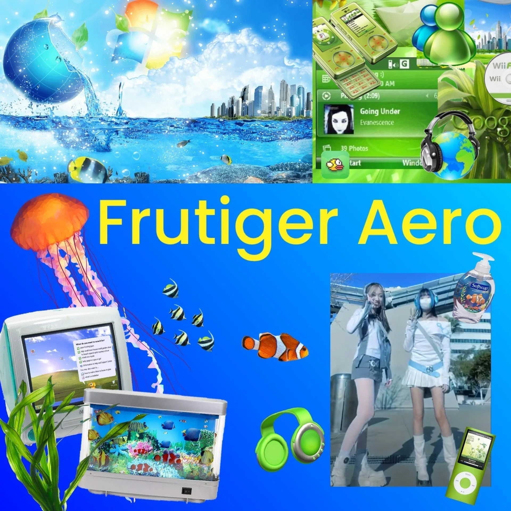
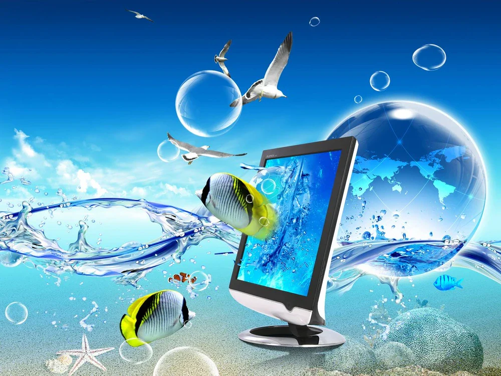
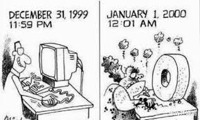
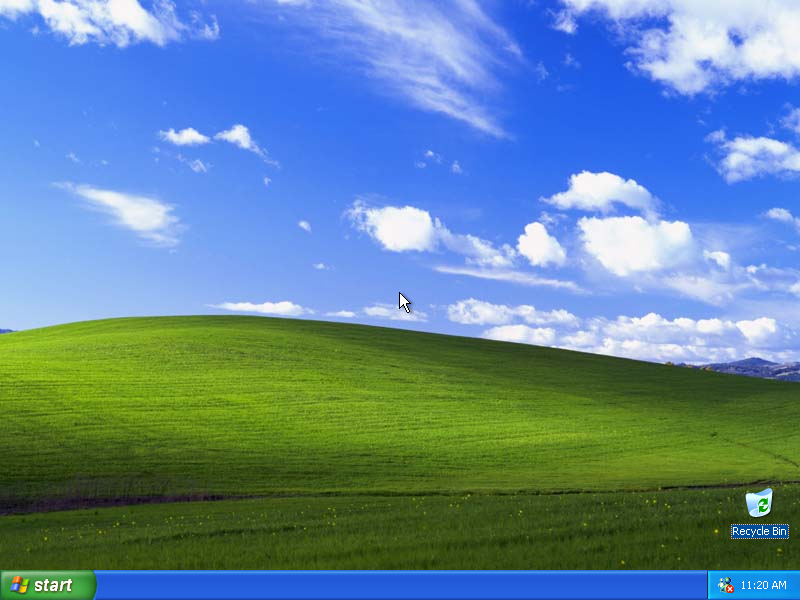
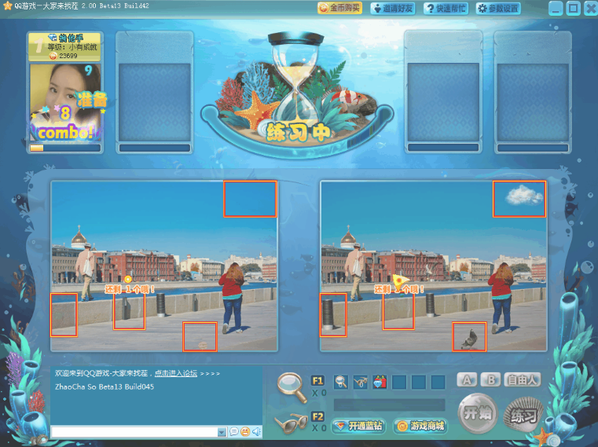
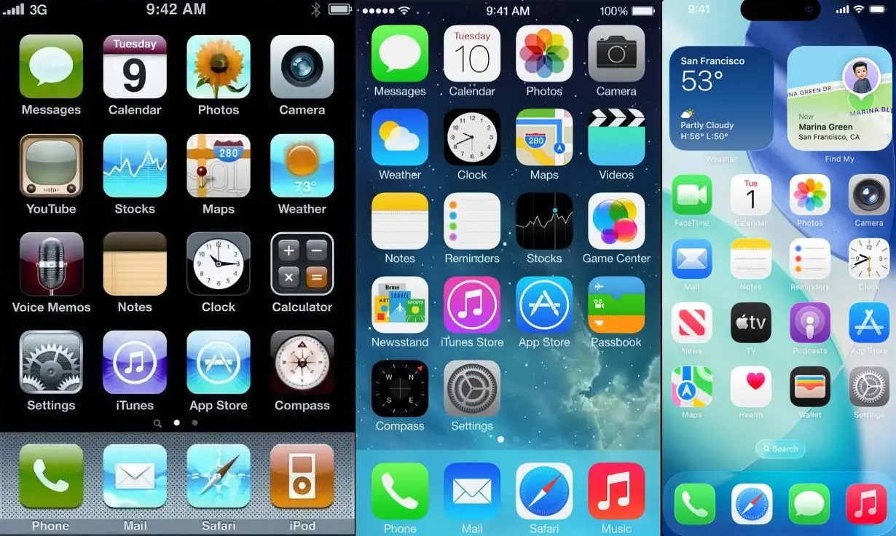
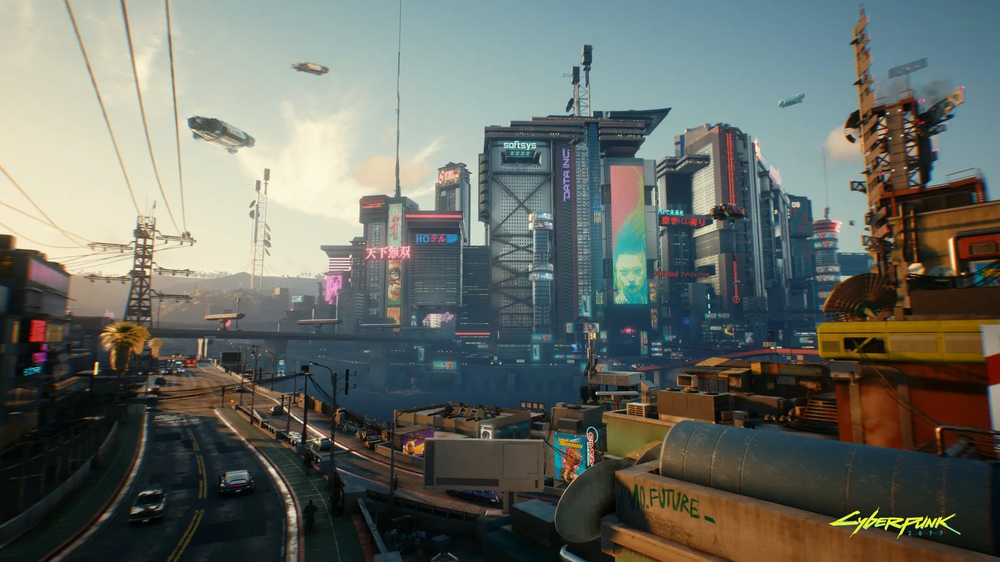
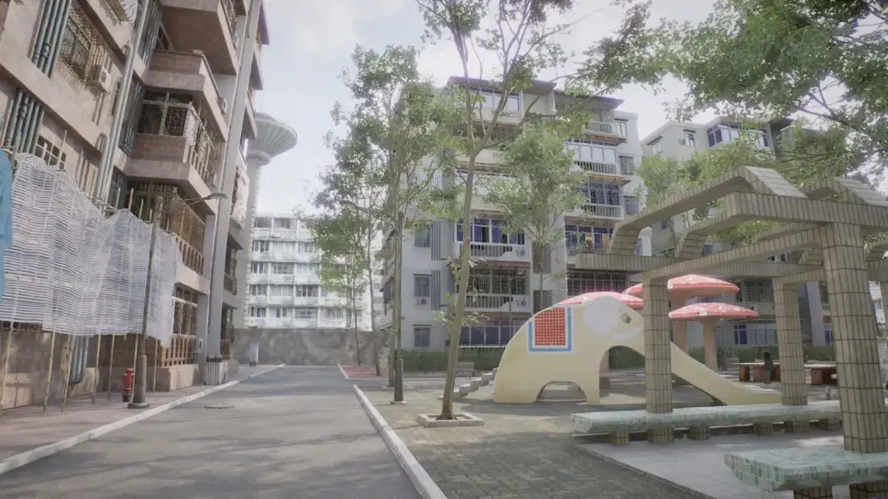
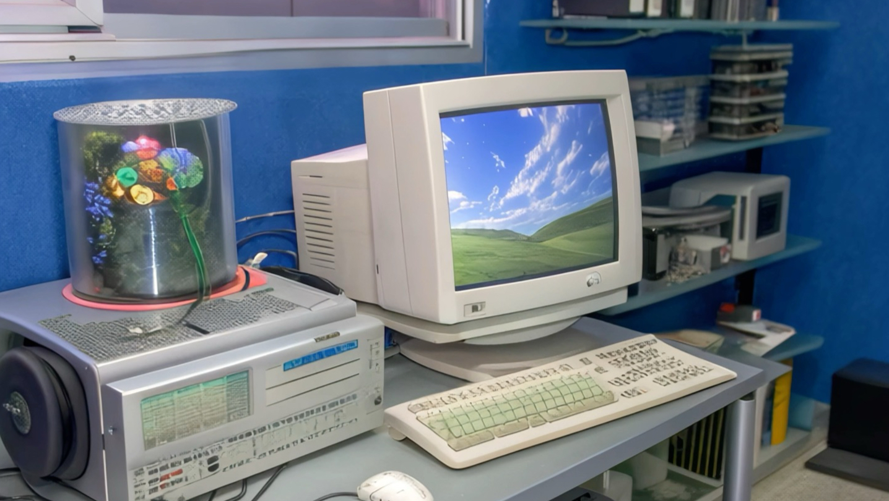

Frutiger Aero 与千禧：悼念那从未抵达的未来
穿新衣吧 剪新发型呀，轻松一下 Windows 98
以后的路不再会有痛苦，我们的未来该有多酷
——《New Boy》朴树
世界是湿润的玻璃屏。水滴从天而降，浮在空中形成泡泡。你继续走，每一步都踩在亮度为80%的草地上。呼吸着清新空气，看向湛蓝天空下的自然都市。那是童年广告里承诺的明天，一尘不染。
赛博朋克不是未来，而是现在
写在前面
本文的创作缘由是最近个人对Frutiger Aero美学风格的着迷，以及想探清为何自己从未经历千禧，却对其感到怀念的原因。我会从Frutiger Aero美学的表现特征以及兴衰入手，再提及核文化，理解Frutiger Aero破产的原因。
Frutiger Aero 的视觉美学
Frutiger Aero美学的视觉元素有蓝天，白云，草地，高楼，地球，泡泡，玻璃，金鱼，电脑等等。颜色饱和，蓝天出自完美的调色板，而草地永远充满生机，异常平整，毫无杂草。构图中高楼占比较少甚至没有，地球则以绿色或蓝色呈现，隐藏了遥感地图中的灰与棕。平滑的玻璃，弧线完美的泡沫与金鱼，不存在棱角，亦不存在冲突，整体和谐得过于诡异。

最与生态自然相悖的可能只有电脑。但是它们或被完美的泡泡所包裹，或自发流出一派生机勃勃的自然景观：它不仅受掌控，还有利无弊。它似乎承诺着一个绿色的未来，即科学技术的发展不会加重人们的工作负担，不会降低人们的生活质量。相反，它能使人们于工业烟囱中解放，转向更智能与轻松的电脑。电脑，使人们更高效地工作，同时作为一种社交与娱乐的工具，带给人们连结与欢笑。

Frutiger Aero 的兴起
Frutiger Aero的缘起伴随着希望，寄托着人们对于美好生活的愿景。千禧年前，人们对于千年虫的恐惧与不安，兴许也曾对计算机技术产生过怀疑与排斥。但在世纪之交，万家灯火与旖旎烟花之下，千禧年成功而至。没有黑屏，没有停电，没有瘫痪，只有人们的欢呼与庆祝。从悬而未决到一锤定音，两千年后，计算机被人们拥入怀中，成为时尚单品，掌上明珠。人们相信新技术的发展将会缔造一个全新的未来，他们也是如此承诺。深受这种气氛的影响，Frutiger Aero美学风格应运而生。

Windows XP，则是将这一审美浪潮推至顶峰。XP的默认壁纸便采用了Frutiger Aero的风格：蓝天，白云，草地，没有人的踏足，没有机器的出现，也没有污染的渗入。XP的UI设计拟物化：Search是形象的彩绘放大镜，Date and Time是生动的日历和时钟，Firewall是一面由红砖砌成的墙，这是以前的Windows系统没有的。这使得XP更像是玩具，而不是工作用的操作系统。这样的设计推动了家用电脑的普及：它的上手难度更低，对第一次进入电脑世界的人友好；它的UI有趣，吸引了更多的好奇的孩童。任天堂的Wii，3DS也采取了相同的设计思想，以白色为主题色，更加清新的Menu，UI加入反光/倒影效果；早年的QQ游戏UI设计亦如此。它们都有着Frutiger Aero的身影，清洁美好，焕然一新。


故事的转折
但或许你注意到了，早年的互联网论坛/社交平台，管理尺度相比今天更加松散。不管是国外的reddit，还是国内的百度贴吧等等，互联网原本是匿名的/弱实名的，几乎不受干预的。人们可以不受约束地发表言论，无需考虑什么后果。当然我并不否定网络监管的必要性，只是觉得在各种因素（商业化，政治化，普遍化）的参入下，互联网逐渐失去其一开始所迸发出的活力。就是说当人们使用电脑上网时，也没有说的那么“轻松”。
Frutiger Aero的破产似乎就从这里开始。Frutiger Aero生长于千禧年万物竞发的新风貌中，带着人们对新技术的好奇与憧憬。而随着热情的消退，现实的演进，Frutiger Aero必然面临消亡的命运。社会发展得很快，人们没有办法找到一个慵懒的下午打开Windows XP去把玩它那拟物化的应用图标，也很难去静下心欣赏Wii所做的每一处倒影细节，也不可能在网络论坛里和网友舌战群儒几个日夜。
理想褪去，取而代之的是效率优先。
于是很多设计都变得扁平化，走向极简主义，功能主义；人们的工作呢？不过是从原来的埋头苦干转移到电脑荧屏前的绞尽脑汁罢了；互联网呢？掺杂了太多复杂的因素，引入了各种必要的审核。平台呢？引流限流，利益至上。这就是人们相信的未来吗？这就是他们所承诺的未来吗？Frutiger Aero的图景是新技术的发展带给人们更好的生活体验。我不否认总体生活质量的提高，但现实不还是，人们要去顾虑新的东西，为新的事物所困住。Frutiger Aero逐渐淡出人们的视野，人们宁愿相信CyberPunk才比较像未来。


怪核/梦核
关于CyberPunk便不再展开，我更想聊聊Frutiger Aero的后代——怪核/梦核。怪核/梦核的视觉元素与Frutiger Aero存在重合，蓝天白云，草地高楼等等。怪核/梦核画面的色彩更加暗淡，光线/构图更加诡异，原本的自然景物则由更多的人造物取代，带来的感受也从心旷神怡到焦虑迷离。它们在Frutiger Aero的基础上引入异常元素，像是对其的悼念：过去的和谐与美好已然不在，剩下的是空洞，破碎与失序。千禧的昂扬进取已然不在，剩下的是跟现实对线罢了。我认为这可以作为中式怪核/梦核能同时带来感伤与不安的一种解释吧：我们感伤的是一个黄金时代，不安的是它的悄然缺席。

最后的话
该如何结尾，我想了挺久。千禧距今已然二十多年，那是现今青年一代的童年。Frutiger Aero是美好的，就像童年在滤镜之下也是那么的无忧无虑，弥足珍贵。那不妨就让Frutiger Aero于时代落幕，并带着懵懂无知与年少轻狂一起，从舞台消隐——藏在内心深处，向着风云变幻继续前进吧。
